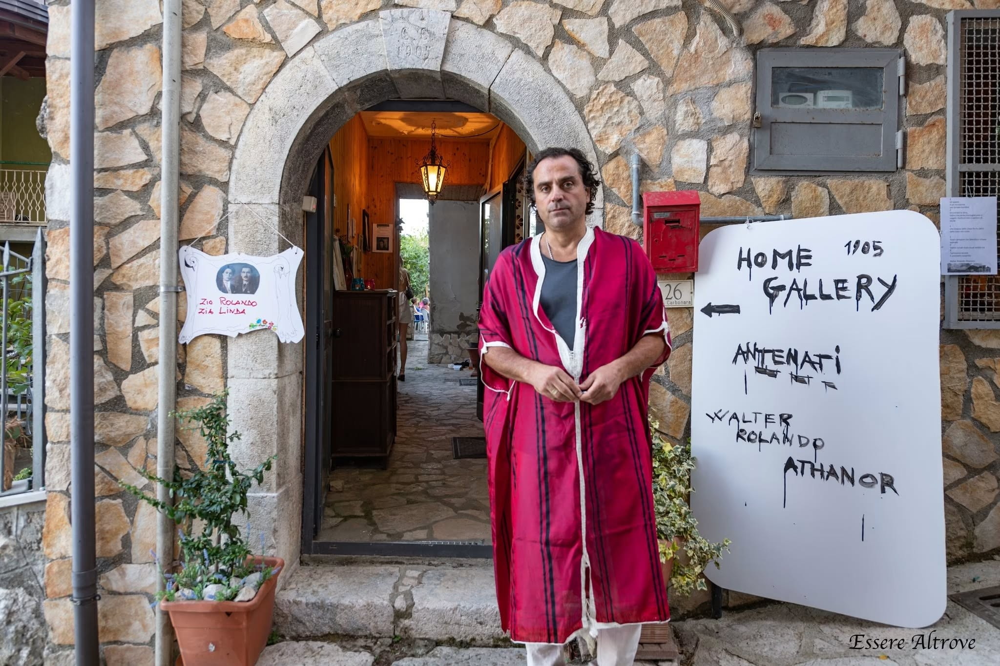

Rosso 400 a.C. Pompei
Olio su tela · 100 × 100 cm
LORD ATHANOR · UNIVERSO FUORI DAL TEMPO
Rolando Lord Attanasio · Arte atemporale e ultrametafisica
«L'arte non appartiene al tempo. Il tempo attraversa l'arte.»

Le soglie dell'universo
Cinque passaggi per entrare nel mondo di Lord Athanor: immagini, pensiero e nuove rotte oltre il tempo.
Materia, luce e visioni pittoriche. Attraversa la galleria di Athanor.
Apri la galleria ↗ 02 · CostellazioniUn percorso tra materia, tempo, inconscio, sacro, oro e universo.
Entra nel museo ↗ 03 · Stella-sogliaUn nuovo passaggio nell'universo Lord Athanor.
Raggiungi Antares ↗ 04 · VisioneL'opera come varco tra memoria, materia e possibilità.
Ascolta il pensiero ↓ 05 · RottaUna rotta aperta verso ciò che ancora non ha forma.
Segui la rotta ↗L'artista
Rolando Lord Attanasio — Athanor — sviluppa una ricerca artistica che mette in dialogo pittura, materia, memoria e immaginazione. La sua poetica dell'arte atemporale attraversa immagini, simboli e paesaggi interiori, cercando uno spazio in cui passato, presente e futuro possano coesistere.
La pittura diventa laboratorio di trasformazione: terra, cenere, pigmenti, luce e colore si fanno strumenti per interrogare la realtà e aprire possibilità visionarie. Accanto alle opere pittoriche, la ricerca si estende alla scrittura, al cinema sperimentale e al metateatro dell'assurdo.
L'opera come soglia, l'artista come ricercatore.
Archivio visivo · Opere scelte
Una selezione dalla ricerca pittorica di Athanor. Ogni opera apre una soglia tra memoria, materia e immaginazione.
Olio su tela · 100 × 100 cm

Olio su tela · 100 × 100 cm

Olio su tela · 100 × 100 cm · 2000
Olio e oro su tela · 70 × 80 cm
Terra, argilla, pietra, lavanda e radici · 90 × 90 cm
Olio su tela · 100 × 100 cm · 2000
Poetica e pensiero
«Fuori dalla gabbia del tempo, l'opera continua a divenire.»
L'arte atemporale non è fuga dalla storia, ma un modo di attraversarla senza restarne prigionieri. La materia custodisce tracce, la pittura apre varchi, l'immagine diventa luogo d'incontro tra memoria e possibilità.
Terra, cenere, pietra, radici e pigmenti: materia come archivio vivente.
Visioni, sogni e simboli come soglie tra coscienza e immaginazione.
La luce, le presenze e le connessioni cosmiche come rete di relazioni.
Un luogo da attraversare
Un museo virtuale in cui le opere si incontrano attraverso nuclei simbolici — materia, tempo, inconscio, sacro, oro e universo — oltre la sola cronologia.
Antares · Una stella-soglia
Una luce che arriva da lontano, un punto d'orientamento nel buio. Antares apre una nuova soglia nell'universo di Lord Athanor: un invito ad attraversare l'ignoto e lasciarsi guidare dalle immagini.
Apri il dossier Antares ↗Windward · Rotta aperta
Una direzione presa controvento, verso forme ancora da immaginare. Windward prolunga la ricerca di Athanor tra pittura, cinema e paesaggi interiori, là dove il viaggio diventa trasformazione.
Entra nell'universo Windward ↗Oltre la tela
La ricerca di Athanor si spinge verso il linguaggio cinematografico, la sperimentazione video e il metateatro dell'assurdo. Corpi, oggetti e immagini quotidiane possono diventare presenze enigmatiche, mentre la narrazione si apre al paradosso e alla sospensione del tempo.
Immagini in movimento, colore, simboli e trasformazioni visive.
Personaggi e oggetti mettono in crisi le convenzioni della comunicazione.
Storie sospese tra memoria, paesaggio, apparizioni e tempo circolare.
Percorso espositivo
Castello Colonna, Genazzano. Un progetto espositivo dedicato alle possibilità della materia e alla luce come promessa.
Biennale Internazionale e Premio della Critica, Casina Vanvitelliana, Bacoli.
Archivio del percorso espositivo 2026. Per le prossime mostre, date e sedi saranno aggiunte quando confermate.
In contatto
Per informazioni sulle opere, mostre, collaborazioni culturali e progetti audiovisivi.
Artista · Pittura · Arte atemporale · Cinema
I riferimenti di contatto saranno pubblicati qui a breve.